Oct 6th, 2022 (Python processed)¶
Motivation: Edited xtract.m (previously: hadi_processed.m) used to extract data from designstructs (Yuwei’s directory). Next, wrote a function mat2hypy to extract data from MATLAB files and save as h5.
# HIDE CODE
import os
import sys
from copy import deepcopy as dc
from os.path import join as pjoin
from IPython.display import display, IFrame, HTML
# tmp & extras dir
git_dir = pjoin(os.environ['HOME'], 'Dropbox/git')
extras_dir = pjoin(git_dir, 'jb-MTMST/_extras')
fig_base_dir = pjoin(git_dir, 'jb-MTMST/figs')
tmp_dir = pjoin(git_dir, 'jb-MTMST/tmp')
# GitHub
sys.path.insert(0, pjoin(git_dir, '_MTMST'))
from model.vae import ConfigVAE, VAE
from utils.plotting import *
# warnings, tqdm, & style
warnings.filterwarnings('ignore', category=DeprecationWarning)
from tqdm.notebook import tqdm
%matplotlib inline
set_style()
From MATLAB to h5py¶
from utils.process import mat2hypy
base_dir = '/home/hadi/Documents/MTMST'
xtract_dir = pjoin(base_dir, 'Yuwei', 'MTproject_data', 'xtracted')
save_dir = pjoin(base_dir, 'MTLFP', 'xtracted_python')
os.makedirs(save_dir, exist_ok=True)
mat2hypy(load_dir=xtract_dir, save_dir=save_dir, tres=25, grd=15)
group ytu029 created: 100%|██████████| 60/60 [02:20<00:00, 2.34s/it]
DONE.
Check one of the mat files¶
import scipy.io as sio
f = 'tres25_clu221.mat'
mat_content = sio.loadmat(pjoin(xtract_dir, f))
list(mat_content)
['__header__',
'__version__',
'__globals__',
'badspks',
'badspksR',
'cellindex',
'centerx',
'centerxR',
'centery',
'centeryR',
'expt_name',
'field',
'fix_lost_all',
'fixlost',
'fixlostR',
'latency',
'lfp',
'lfpR',
'num_channels',
'nx',
'ny',
'opticflows',
'opticflowsR',
'partition',
'partitionR',
'psth_raw_all',
'repeats',
'rf_loc',
'spatres',
'spks',
'spksR',
'spkst',
'spkstR',
'stim1',
'stim2',
'stimR',
'tind_start_all']
from utils.process import _fix_spkst, _fix_stim
spkst = _fix_spkst(mat_content['spkstR'])
spkst.shape
(11763, 16)
plt.imshow(np.isnan(spkst), aspect=1/1000)
<matplotlib.image.AxesImage at 0x7f1f21644a30>
Hyperflow¶
t = 512
opf = np.round(mat_content['opticflows'][t], 4)
opf
array([13.049 , 13.2802, -3.2637, -3.079 , 1.301 , 1.6489])
cx = mat_content['centerx'][t].item()
cy = mat_content['centery'][t].item()
cx, cy
(3.0664302816466473, 0.5885076891866451)
size = (32,) * 2
sres = 2
radius = 7
xl = int(np.round(size[0] / sres))
yl = int(np.round(size[1] / sres))
xi0 = np.linspace(- xl / 2 + 0.5, xl / 2 - 0.5, xl) * sres
yi0 = np.linspace(- yl / 2 + 0.5, yl / 2 - 0.5, yl) * sres
xi0, yi0 = np.meshgrid(xi0, yi0)
plt.imshow(xi0)
<matplotlib.image.AxesImage at 0x7f1f214ecf40>
xi = xi0 - cx
yi = yi0 - cy
mask = xi**2 + yi**2 <= radius**2
raw = np.zeros((xl, yl, 2, 6))
plt.imshow(mask)
<matplotlib.image.AxesImage at 0x7f1f2155fdf0>
from utils.hyperflow import get_vel_field
center = np.concatenate([
mat_content['centerx'].reshape(-1, 1),
mat_content['centery'].reshape(-1, 1)
], axis=-1)
stim = get_vel_field(
opticflow=mat_content['opticflows'].astype(float),
center=center,
size=size,
sres=sres,
radius=7,
)
stim.shape
(43200, 512)
def fix_stim2(x, grd):
return x.reshape((-1, grd, grd, 2))
x = fix_stim2(stim, 16)
x.shape
(43200, 16, 16, 2)
fig, axes = create_figure(1, 3, (10, 2.4), 'all', 'all', constrained_layout=False)
im = axes[0].imshow(x[t, ..., 1])
plt.colorbar(im, ax=axes[0])
axes[0].set_title('hadi/get_vel_field')
im = axes[1].imshow(_fix_stim(mat_content['stim1'], 15)[t, ..., 1])
plt.colorbar(im, ax=axes[1])
axes[1].set_title('stim1')
im = axes[2].imshow(_fix_stim(mat_content['stim2'], 15)[t, ..., 1])
plt.colorbar(im, ax=axes[2])
axes[2].set_title('stim2')
plt.show()
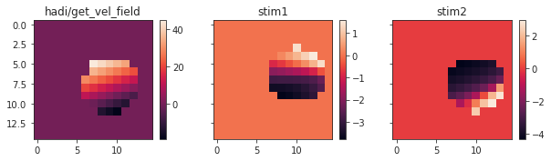
fig, axes = create_figure(1, 3, (10, 2.4), 'all', 'all', constrained_layout=False)
axes[0].plot(stim[t])
axes[1].plot(mat_content['stim1'][t])
axes[2].plot(mat_content['stim2'][t])
plt.show()
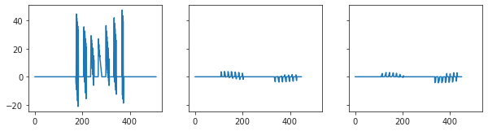
y = mat_content['spks'].astype(float)
z = np.einsum('ij, jklm -> iklm ', y.T, x)
z /= np.max(np.abs(z))
z.shape
(16, 16, 16, 2)
fig, axes = create_figure(2, 16, (22, 3), 'all', 'all', constrained_layout=True)
for i in range(16):
axes[0, i].imshow(z[i, ..., 0], vmin=-1, vmax=1)
axes[1, i].imshow(z[i, ..., 1], vmin=-1, vmax=1)
plt.show()
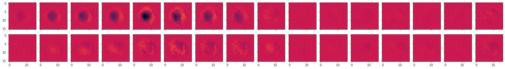
y = mat_content['spks'].astype(float)
z = np.einsum('ij, jklm -> iklm ', y.T, _fix_stim(mat_content['stim1'], 15))
z /= np.max(np.abs(z))
z.shape
(16, 15, 15, 2)
fig, axes = create_figure(2, 16, (22, 3), 'all', 'all', constrained_layout=True)
for i in range(16):
axes[0, i].imshow(z[i, ..., 0], vmin=-1, vmax=1)
axes[1, i].imshow(z[i, ..., 1], vmin=-1, vmax=1)
plt.show()
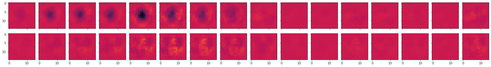
y = mat_content['spks'].astype(float)
z = np.einsum('ij, jklm -> iklm ', y.T, _fix_stim(mat_content['stim2'], 15))
z /= np.max(np.abs(z))
z.shape
(16, 15, 15, 2)
fig, axes = create_figure(2, 16, (22, 3), 'all', 'all', constrained_layout=True)
for i in range(16):
axes[0, i].imshow(z[i, ..., 0], vmin=-1, vmax=1)
axes[1, i].imshow(z[i, ..., 1], vmin=-1, vmax=1)
plt.show()
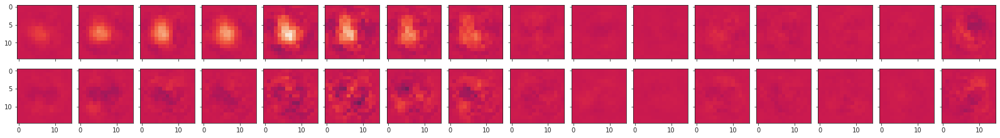
df = []
for i in range(16):
num = y[:, i].sum(0)
df.append({
'cell': [i],
'num_spk': [num],
'fr': [num / (len(y) * 25e-3)],
})
df = pd.DataFrame(merge_dicts(df))
fig, ax = create_figure(1, 1, (6, 3))
sns.barplot(data=df, x='cell', y='fr', ax=ax)
ax.set_ylabel('Firing rate [Hz]', fontsize=14);
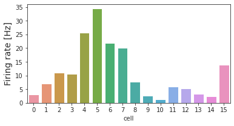
szx = szy = 30
sres = 2
delta = 1 / sres
xl = np.round(szx / sres)
yl = np.round(szy / sres)
delta, xl, yl
(0.5, 15.0, 15.0)
szx / sres
15.0
xi0 = np.linspace(- xl / 2 + 0.5, xl / 2 - 0.5, 15) / delta
yi0 = np.linspace(- yl / 2 + 0.5, yl / 2 - 0.5, 15) / delta
xi0, yi0 = np.meshgrid(xi0, yi0)
xi0.shape, yi0.shape
((15, 15), (15, 15))
plt.imshow(xi0 ** 2 + yi0 ** 2 <= 49)
<matplotlib.image.AxesImage at 0x7f1efd19bb20>
From PY_PROC, return later:¶
import h5py
base_dir = '/home/hadivafa/Documents/PROJECTS/MT_LFP'
path = os.path.join(base_dir, "synth_hyperflow", "hyperflow.h5")
f = h5py.File(path, 'r')
opticflow = np.array(f["opticflow"], dtype=float)
aperturecenter = np.array(f["aperturecenter"], dtype=float)
stim = np.array(f["stim"], dtype=float)
f.close()
stim = stim.reshape(2, 15, 15, -1)
stim.shape, opticflow.shape, aperturecenter.shape
((2, 15, 15, 2097152), (6, 2097152), (2, 2097152))
import sys
sys.path.insert(0, pjoin(os.environ['HOME'], 'Dropbox/git/MT-VAE'))
from utils.plotting import plot_vel_field
plot_vel_field(stim[..., 1180:1190])
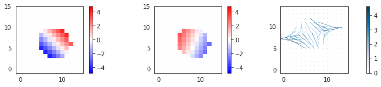
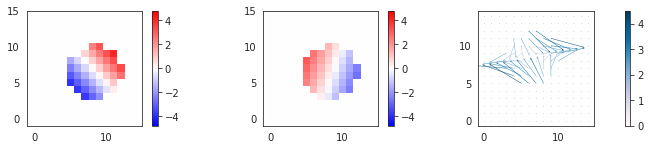
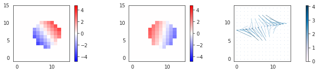
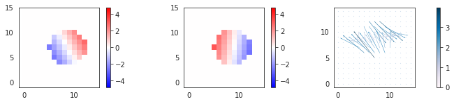
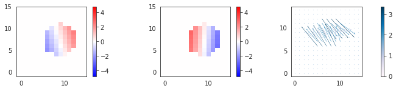
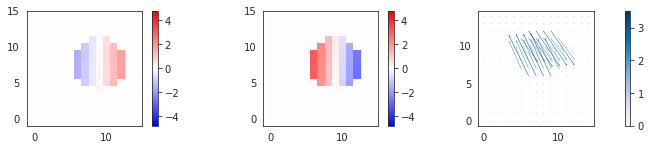
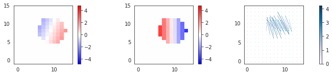
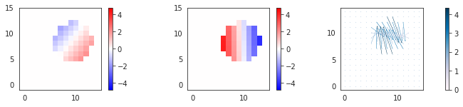
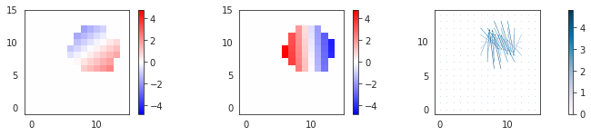
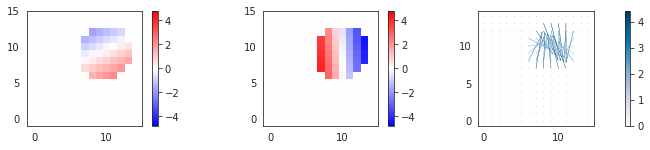